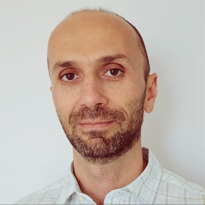
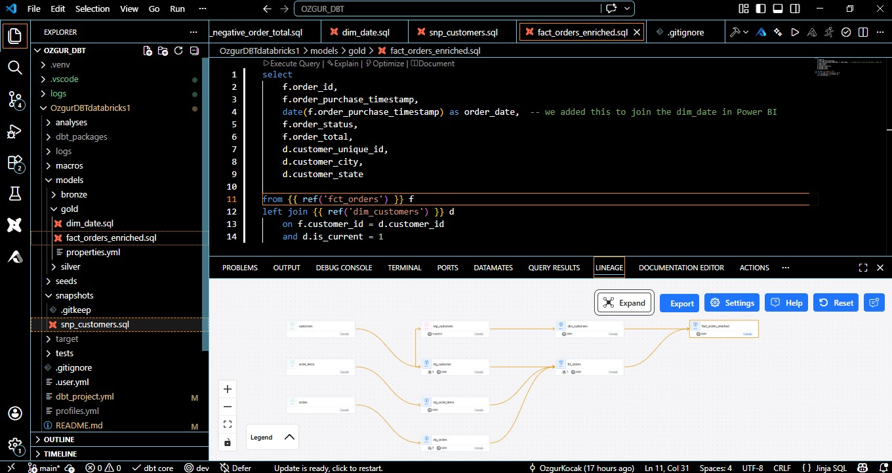
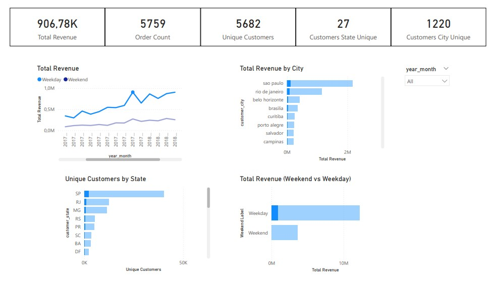

Data & Business Intelligence Professional | Mechanical Engineer
Data and BI professional with an engineering background and strong business focus, delivering data-driven decision support in regulated, high-responsibility environments. Expertise across SQL-based systems, cloud data platforms, and BI tools, focused on quality, clarity, and business impact.
Tech: dbt Core, Databricks, SQL
End-to-end data pipeline focused on modern data stack transformation logic and scalable data modeling.


Tech: Azure Synapse, Serverless SQL, DirectQuery, Power BI